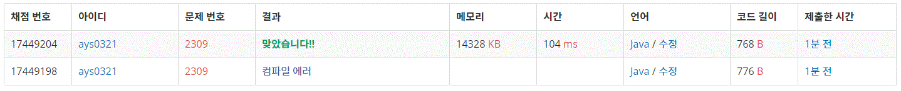

2309번 일곱 난쟁이
문제요약
아홉 난쟁이의 키가 주어졌을 때, 백설공주를 도와 총 키의 합이 100이 되는 일곱 난쟁이를 찾는 프로그램을 작성하시오.
public class Baekjoon2309 {
public static void main(String[] args) {
Scanner input = new Scanner(System.in);
List tall = new ArrayList<>();
for(int i = 0; i < 9; i++)
tall.add(input.nextInt());
for(int i = 0; i < 9; i++) {
int sum = 0;
for(int j = 0; j < 9; j++) {
sum = 0;
List a = new ArrayList<>();
a.addAll(tall);
if(i == j)continue;
a.set(i, 0); a.set(j, 0);
for(int k = 0; k < 9; k++) {
sum += a.get(k);
}
if(sum == 100) {
tall = a;
break;
}
}
if(sum == 100) break;
}
tall.sort(null);
for(int i = 0; i < 9; i++) {
if(tall.get(i) != 0) {
System.out.println(tall.get(i));
}
}
}
}
문제는 브루트 포스를 사용하는 쉬운 문제이었지만 얕은 복사와 깊은 복사에 대해서 알지 못해 시간이 오래 걸렸다.
